Nosso grafismo é modular e inspirado na nossa operação e em ativos que fazem parte do ecossistema Rumo: vagões, caminhões, contêineres e navios.
Módulos
O grafismo é composto por 2 tipos de módulos:
Com chanfro
Sem chanfro
Proporção do chanfro
Utilizamos o grid de construção da peça para definir a proporção dos chanfros.
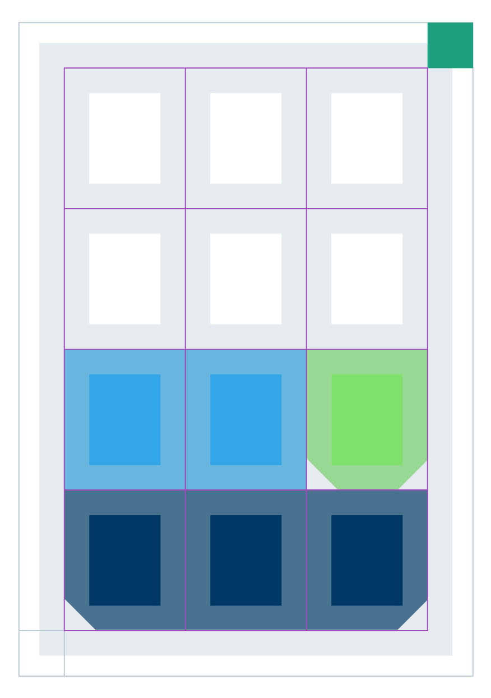
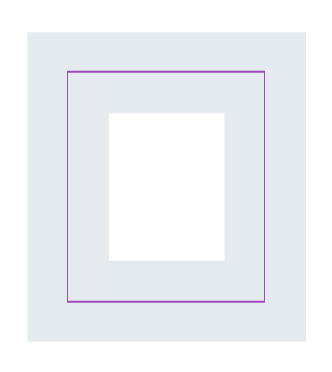
Proporção da célula do Grid
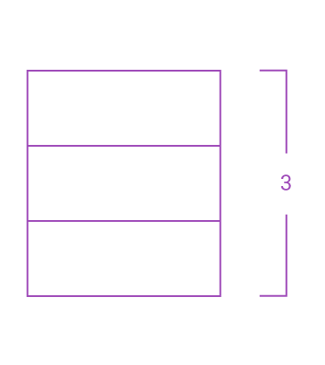
Divida a altura da célula em três partes.
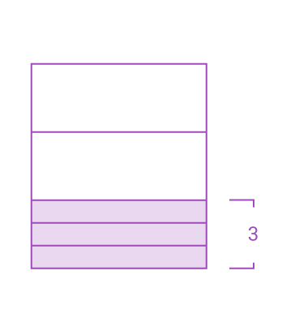
Divida a base da célula em três partes.
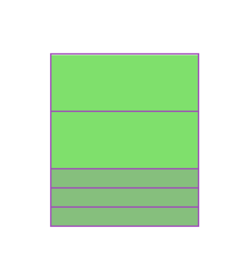
Aplique a divisão nos módulos.
Faça o corte de 45º no chanfro respeitando um dos três níveis da base.
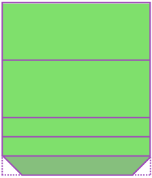
Chanfro mínimo.
1/3
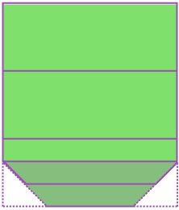
Chanfro médio.
2/3
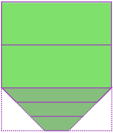
Chanfro máximo.
3/3
Chanfro médio.
2/3
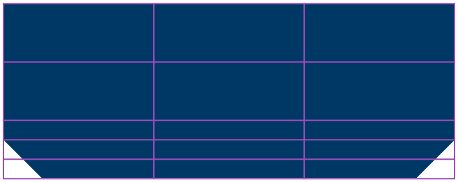
Chanfro médio.
2/3
Don´ts Grafismo
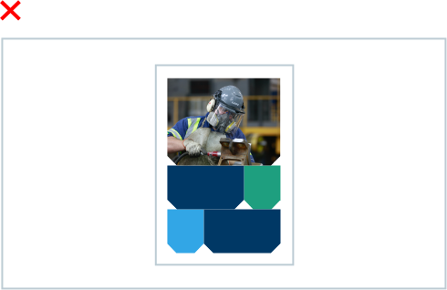
Não chanfre todas as formas, alterne entre módulos retos e com chanfro.
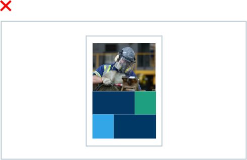
Não faça uma peça sem nenhum chanfro.
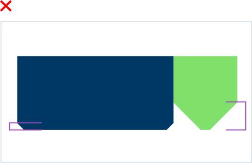
Não utilize proporções diferentes nos chanfros de uma mesma peça.
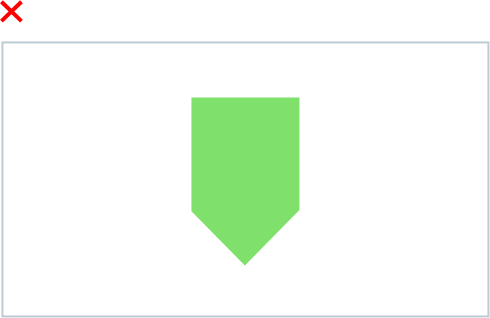
Não transforme o chanfro em uma ponta.
Não utilize chanfros muito agressivos que atrapalhem o conteúdo.
Flexibilidade do módulo
O módulo pode ser expandido ou contraído horizontalmente:
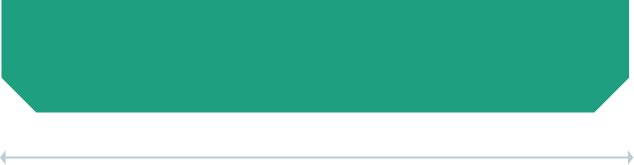O módulo pode ser expandido ou contraído horizontalmente:
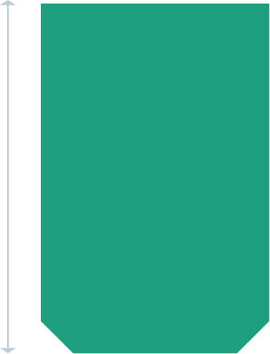
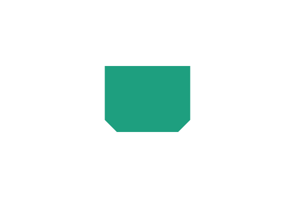
Cuidado ao expandir o grafismo! Expanda proporcionalmente para não distorcer o chanfro.
O Grafismo pode ser aplicado de 3 formas:
Módulos
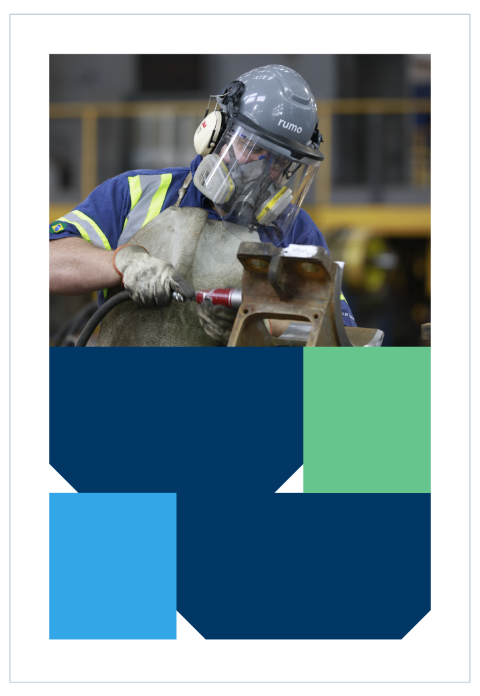Composição em linha
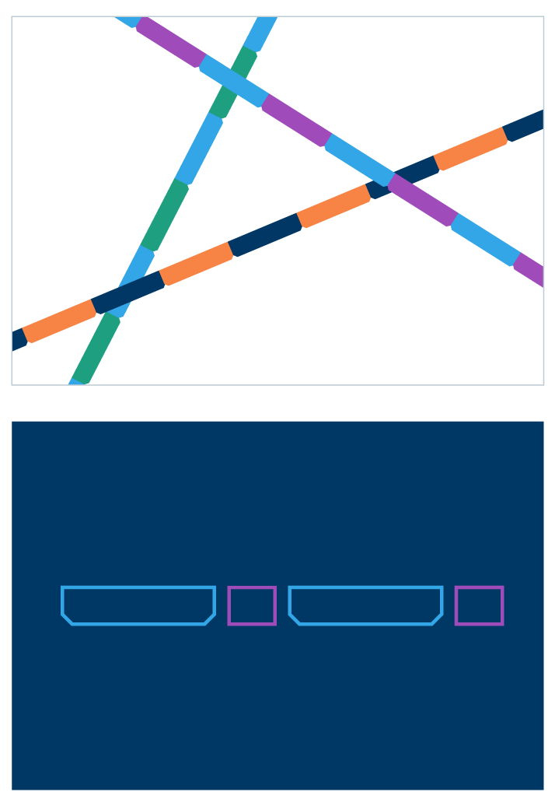Padrões
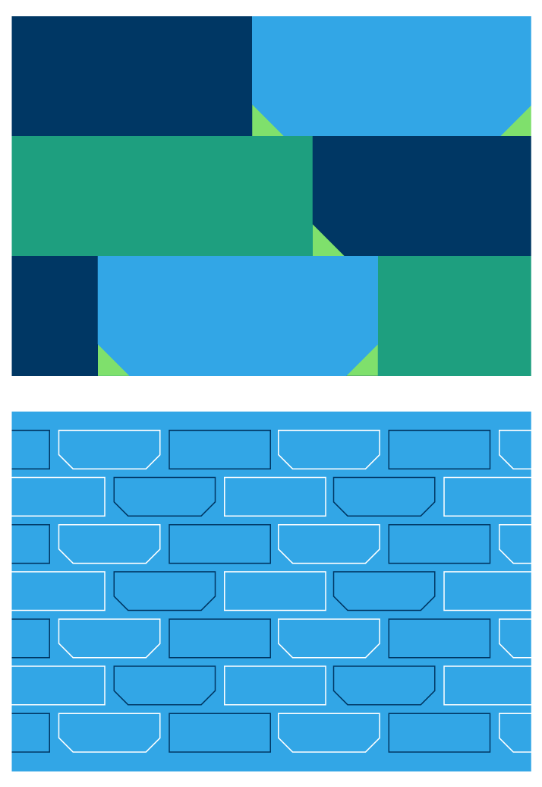Grafismos em movimento
O Grafismo pode ser aplicado de 3 formas:
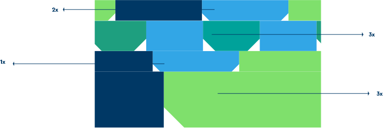
Diferentes velocidades e direção dos grafismos gerando uma composição em movimento
Padrões em movimento
Linhas em movimento
Download
Cera_Pro.Zip